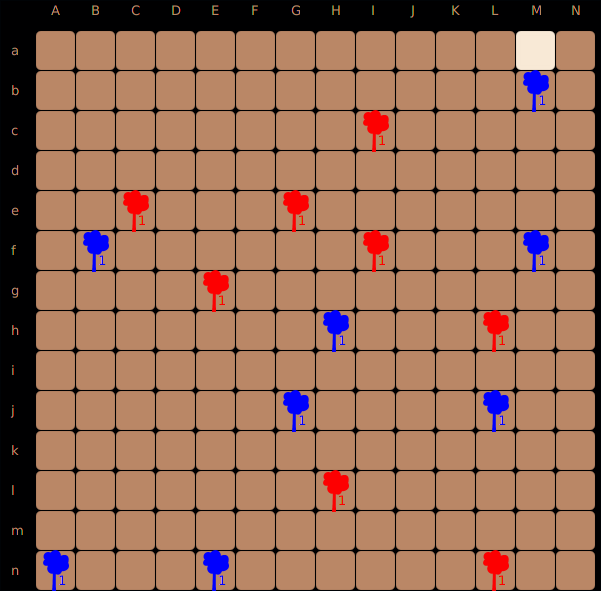
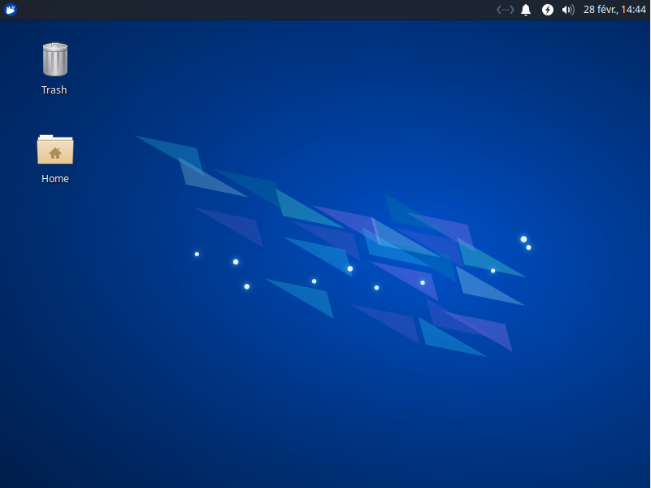
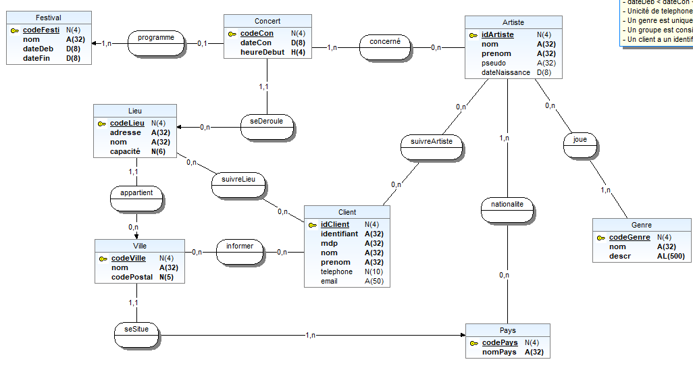
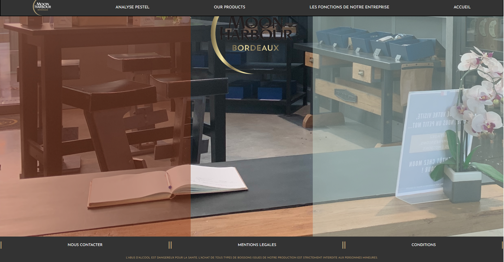
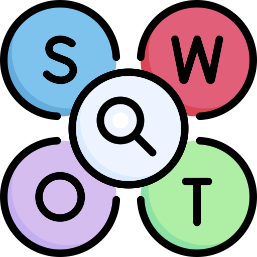

Je m'appelle Florian Chapoullie-Pino et je suis actuellement
étudiant en première année de BUT informatique à l'IUT de
Bordeaux.
Je suis une personne sportive, à l'écoute et joyeuse en
toute circonstance.
Je veille à rendre un travail complet et je me donne
toujours au maximum.

La réalisation de ce projet a été pour moi une réelle
mise en avant
du parcours à venir dans ma carrière professionelle,
et des moyens à mettre en place afin d'implémenter un
besoin client à l'aide d'un langage de
programmation,
tout en ayant à fournir un rapport sur ce projet et
expliquer clairement le code et son
fontionnement.
Il en découle alors pour moi de nombreux points
positifs, comme la mise en
place d'un planning optimisé pour travailler en équipe
et dans de bonne conditions, un
sens des responsabilités car il était important
de
fournir un code
fonctionnel qui répond aux
besoins clients.
Ce projet a été pour moi très riche en matière
d’apprentissage, durant les deux phases qui
constituaient ce projet, j’ai
pu entre-autre contribuer à la mise en place de deux
stratégies qui allaient etre attribués à une intelligence artificielle.
Cela m'a permis d'apprendre comment apprivoiser une
tache donnée, que ce soit le cahier des charges
et les règles dictées par celle-ci ou bien meme les
méthodes de travail à utiliser.
Le principal gain qui découle de ce projet a été pour ma
part l'éveil de mon esprit
logique, qui m'a permis de comprendre selon tel
ou tel cas
quelle était la ou les actions possibles, et
préférables.


Le « challenge » de cette SAE était d’installer une
machine virtuelle pour permettre à une équipe
de dev
de développer un nouveau jeu avec le langage go,
qu’il a donc fallu installer, ainsi qu’un IDE
pour s’en servir.
L’enjeu était donc ici de mettre en place une
machine avec un hardware adapté, un compte
administrateur et un compte développeur
qui ont donc chacun des droits définis selon leur
statut, il a également fallu mettre
en place l'outil git
pour réaliser un git clone ainsi que modifier le
prompt bash pour afficher de n’importe où
l’état de ce git.
Ainsi, ce projet m'a permis à moi et à mes camarades
de maitriser l'installation
d'une machine selon des caractéristiques
bien définis,
ainsi que comprendre comment
fonctionne un
terminal de commande et comment le
modifier pour y indiquer des élements
utiles.
Ce travail de groupe dans le cadre d'une SAE m'a
permit de développer mes connaissances et de
pouvoir maitriser le langage SQL de manière
adéquate.
Le défi derrière ce projet était de mettre en place
une cohésion d'équipe avec son binôme, de
plus il a été important d'assurer de se léguer des
taches pour
optimiser le temps de travail. Au dela de cet esprit
de groupe, l'élément le plus important qui
découle de cette activé a été d'assurer la bonne
qualité des données, de sorte à ce qu'elle soit
cohérente, complete et précise.
Ainsi ma connaissance des bases
de données a
été accrue, avec notamment le
remplissage et la création
d'une base de
donnée , en passant par un schéma
entité-association.


Voici une nouvelle fois une SAE qui m'a permis de
développé mon esprit créatif
et
de maitriser de manière pointue le langage html et
css
pour permettre la réalisation d'un site web en
rapport avec une société.
Le site qu'il était nécessaire de produire devait
donc respecter des critères précis, la loi en
vigueur, car dans mon cas
il s'agissait d'une société qui produit des boissons
alcoolisées. Dans ce cas-ci, j'ai pu
apprendre les normes légales a mettre sur un site
internet, en plus
d'avoir à créer un site ergonomique et pratique au
client.
Cette production a été pour moi une grande lecon,
qui a pu m'en apprendre plus sur le langage HTML et CSS,
mais aussi l'ergonomie
d'un site et
les normes a respecter
vis-à-vis de
celui-ci.
Ce projet m'a permis de mieux aborder ma vision d'une entreprise.
En effet, j'ai pu ici réaliser avec mes camardes une analyse fonctionnelle
d'une entreprise. Mais ce n'est pas tout, il a aussi fallu observer
les différentes opportunités et menaces auxquelles elle était confrontée.
Il en découle alors pour moi de nombreux points
positifs, comme la mise en
place d'un planning optimisé pour travailler en
équipe et dans de bonne conditions, une maitrise des outils de recherche car il était important
de fournir des informations vérifiés et pertinentes qui permet de mieux comprendre l'environnement de l'entreprise.
